以下16张为冻结 R4 构建的实际 Chrome 截图，左为第四批回退分支，右为本轮候选。固定 balanced、clear、FOV 50、buffer 1710×931、DPR 1；机位和时间逐项核对。主协调已亲阅这16张图：G17 R3样板视觉通过；地表R4因裁切草毯边缘被否决。当前十四项产品排除地表R4，恢复批四地表，以下地表图仅作被否决版本证据。
G17维持1560叶／255可编辑件；L0 35032tri，L1 8122tri；GLB 587904 bytes，2材质，3张原创256×512树皮图。地表改连续相关边界，保留路径中心裸土与18次纹理读取。没有扩大物种、范围或移动碰撞。
冻结包 · 68张实际画面校验与收据 · 源工程与过程 · 交接及性能限制
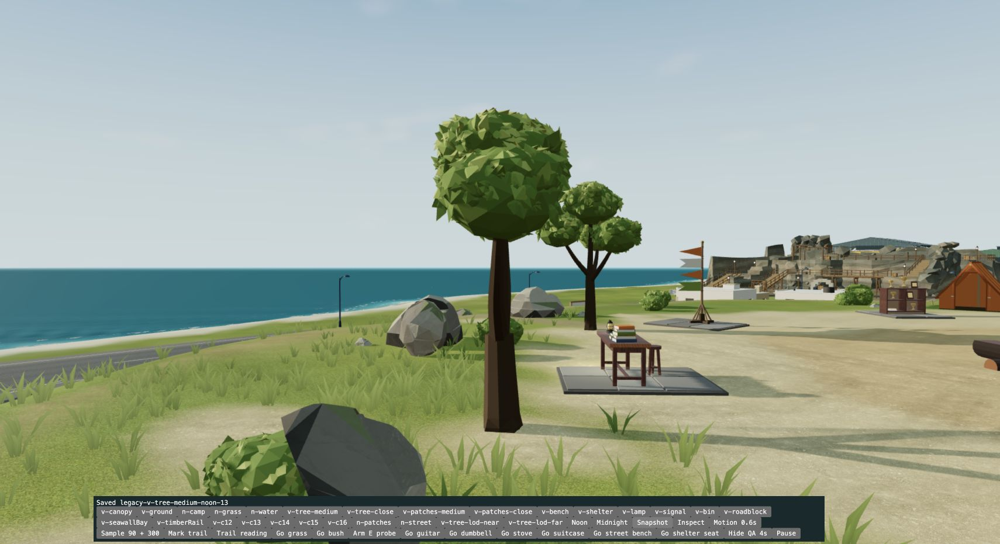
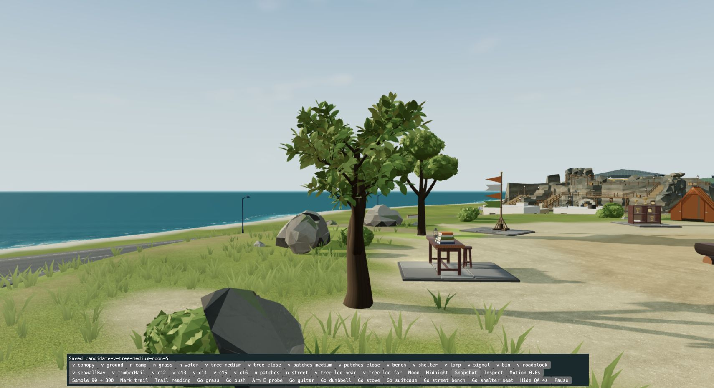
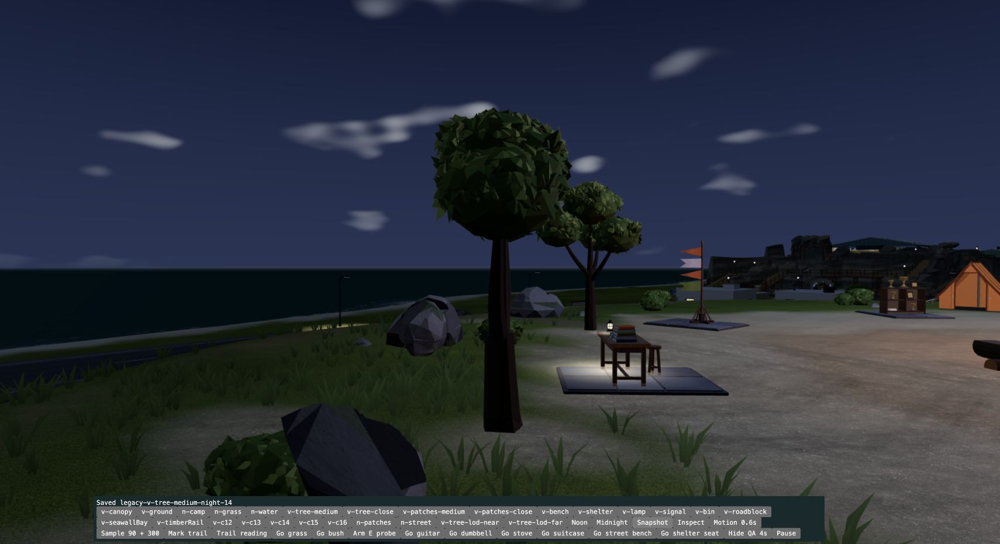
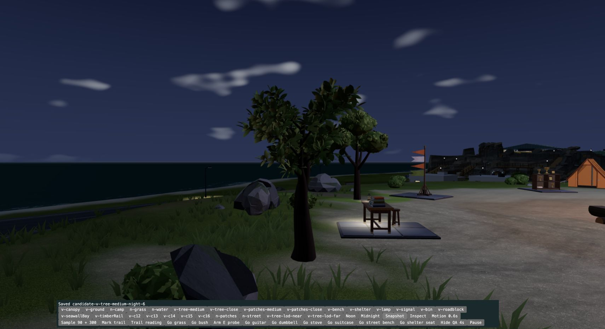
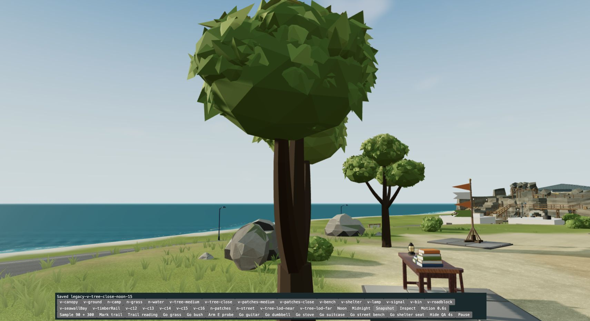
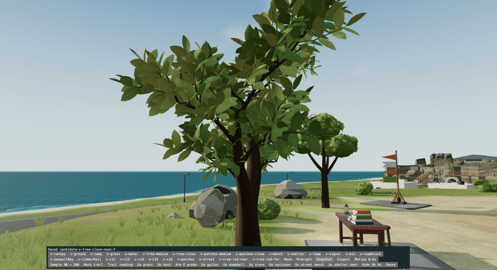
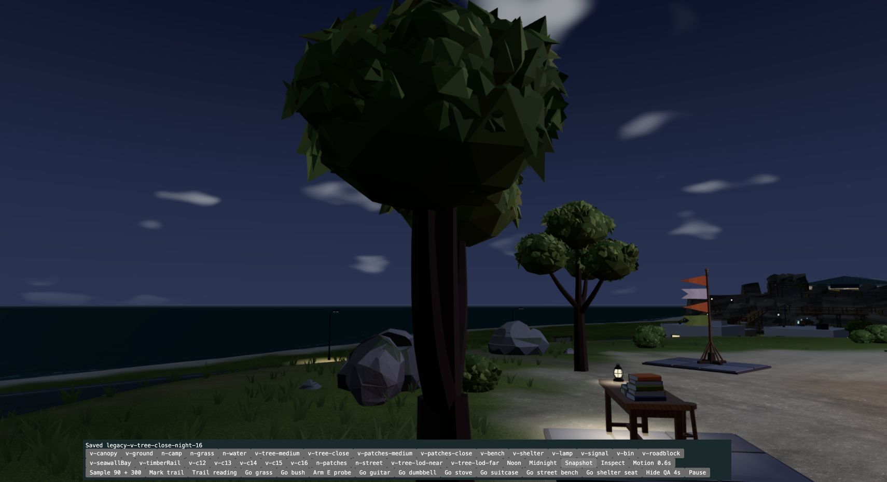
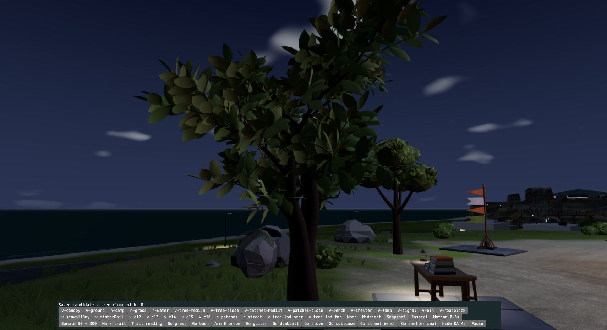
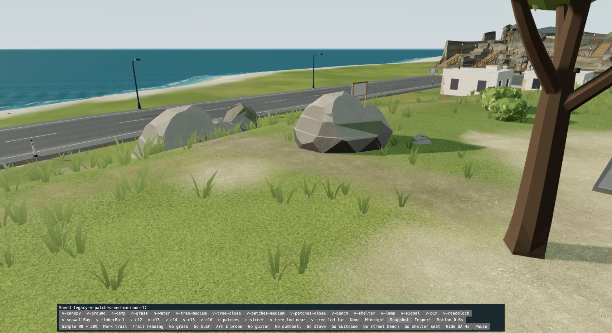
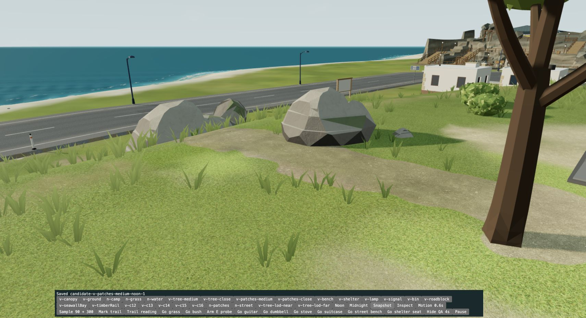
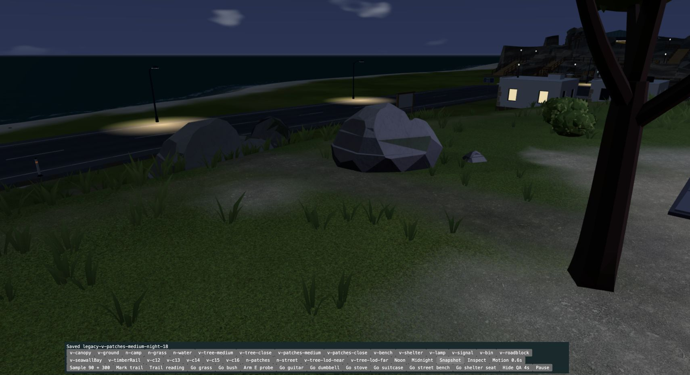
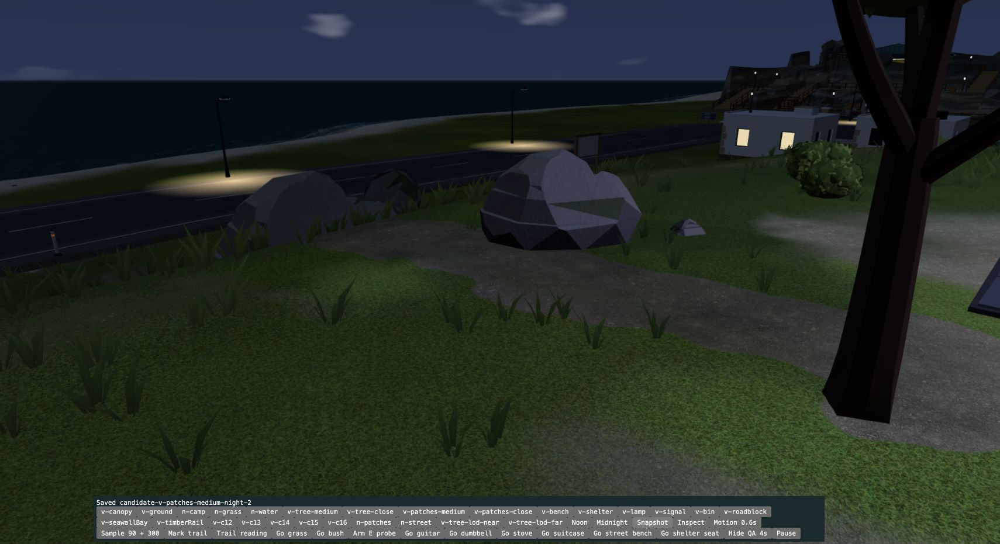
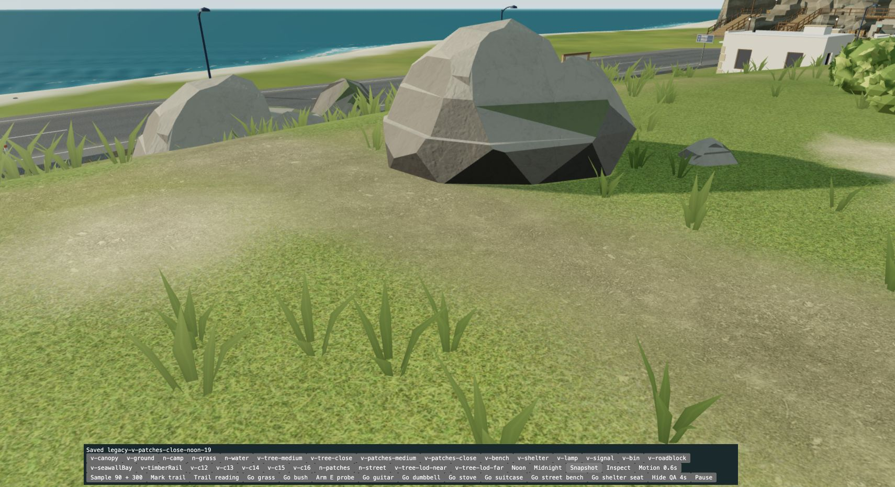
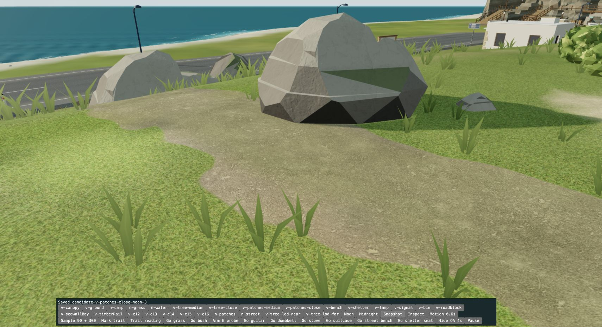
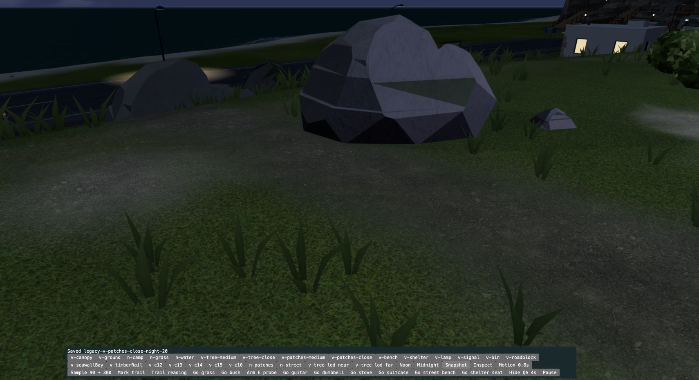
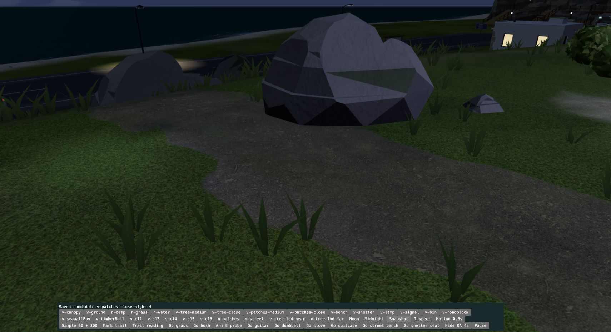